Library
96 booksSorted by title, ignoring “The”, “A” and “An”.
A
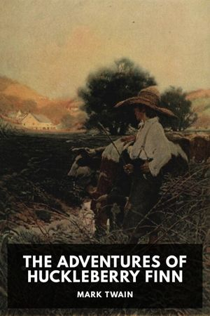
The Adventures of Huckleberry FinnMark Twain- The Adventures of Sherlock HolmesArthur Conan Doyle
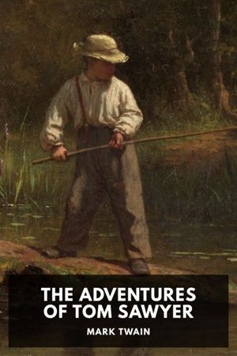
The Adventures of Tom SawyerMark Twain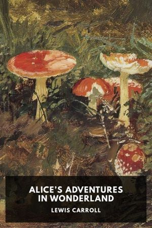
Alice’s Adventures in WonderlandLewis Carroll Anna KareninaLeo Tolstoy
Anna KareninaLeo Tolstoy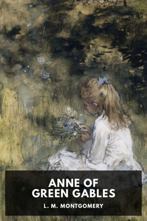
Anne of Green GablesL. M. Montgomery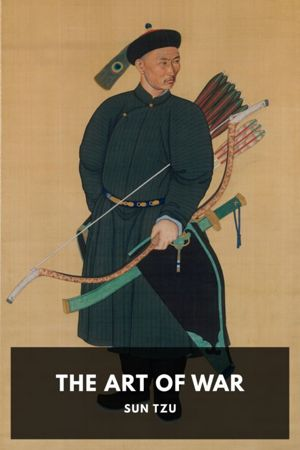
The Art of WarSun Tzu- The Autobiography of Benjamin FranklinBenjamin Franklin
B
- Beautiful Stories from ShakespeareE. Nesbit
- The Brothers KaramazovFyodor Dostoevsky
C
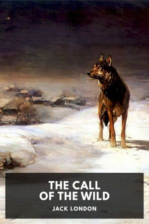
The Call of the WildJack London- The Casebook of Sherlock HolmesArthur Conan Doyle
- The Cave GirlEdgar Rice BurroughsFinished
- A Christmas CarolCharles Dickens
- The Consolation of PhilosophyBoethius
- The Count of Monte CristoAlexandre Dumas71% read
- Crime and PunishmentFyodor Dostoevsky
D
- DialoguesPlato
- DialoguesSeneca
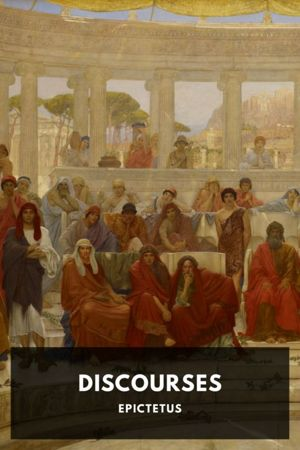
DiscoursesEpictetus- The Divine ComedyDante Alighieri
 Don QuixoteMiguel de Cervantes Saavedra
Don QuixoteMiguel de Cervantes Saavedra- DraculaBram StokerFinished
E
 EmmaJane Austen
EmmaJane Austen- The Emperor of PortugalliaSelma Lagerlöf
- EssaysRalph Waldo Emerson
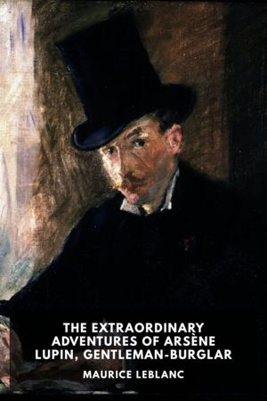
The Extraordinary Adventures of Arsène Lupin, Gentleman-BurglarMaurice Leblanc
F
- FrankensteinMary ShelleyFinished
G
- The Gold BagCarolyn WellsFinished
- Great ExpectationsCharles Dickens
- The Great GatsbyF. Scott Fitzgerald
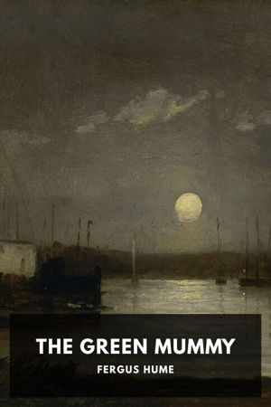
The Green MummyFergus Hume- Gulliver’s TravelsJonathan Swift
H
- HamletWilliam Shakespeare
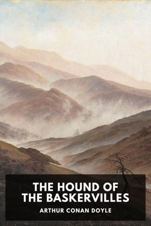
The Hound of the BaskervillesArthur Conan Doyle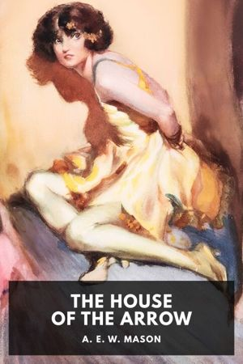
The House of the ArrowA. E. W. Mason
I
- The IdiotFyodor Dostoevsky
 The IliadHomer
The IliadHomer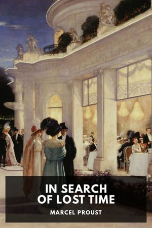
In Search of Lost TimeMarcel Proust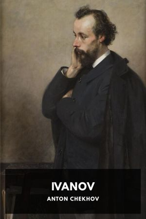
IvanovAnton Chekhov
J
 Jane EyreCharlotte Brontë
Jane EyreCharlotte Brontë
K
- The King in YellowRobert W. Chambers
L
- Les MisérablesVictor Hugo
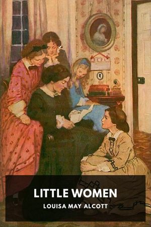
Little WomenLouisa May AlcottFinished
M
- MacbethWilliam Shakespeare
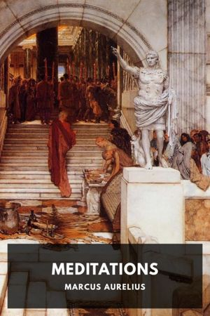
MeditationsMarcus Aurelius55% read- The Memoirs of Sherlock HolmesArthur Conan Doyle
 MiddlemarchGeorge Eliot
MiddlemarchGeorge Eliot Moby DickHerman Melville12% read
Moby DickHerman Melville12% read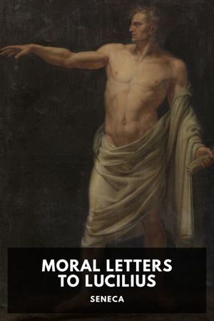
Moral Letters to LuciliusSeneca- Mrs. DallowayVirginia Woolf
- The Murder of Roger AckroydAgatha Christie
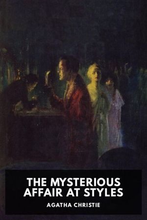
The Mysterious Affair at StylesAgatha Christie- The Mystery of the BarrancaHerman Whitaker
N
- Notes from UndergroundFyodor Dostoevsky
O
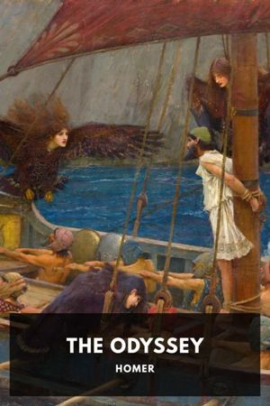
The OdysseyHomer- Of One BloodPauline E. Hopkins
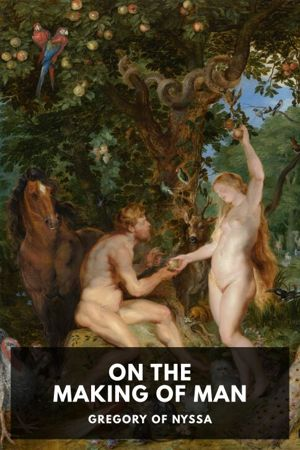
On the Making of ManGregory of Nyssa- The Origin of SpeciesCharles Darwin
- OrlandoVirginia Woolf
P
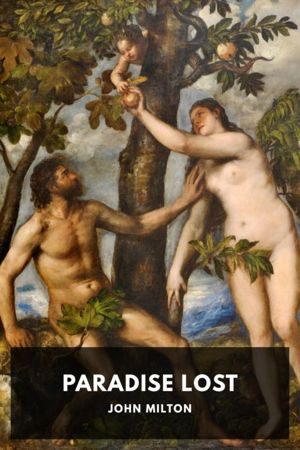
Paradise LostJohn Milton PersuasionJane Austen
PersuasionJane Austen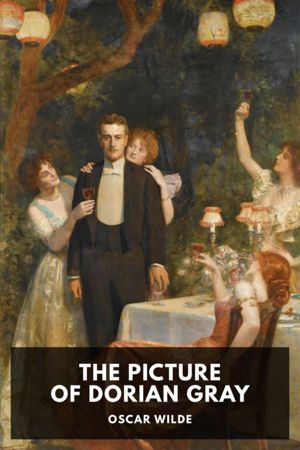
The Picture of Dorian GrayOscar Wilde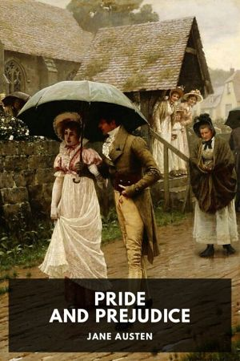
Pride and PrejudiceJane AustenFinished- The PrinceNiccolò Machiavelli
- The Prisoner in the OpalA. E. W. Mason
- The ProphetKahlil Gibran
R
- Robur the ConquerorJules Verne
S
- The Secret GardenFrances Hodgson BurnettFinished
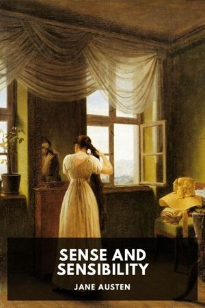
Sense and SensibilityJane Austen- Short FictionJohn Buchan
- Short FictionJoseph Conrad79% read
- Short FictionEdgar Allan Poe
- Short WorksEpictetus
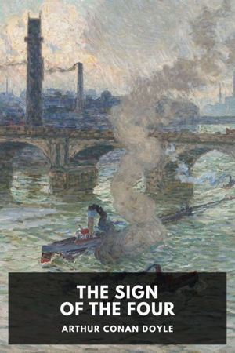
The Sign of the FourArthur Conan Doyle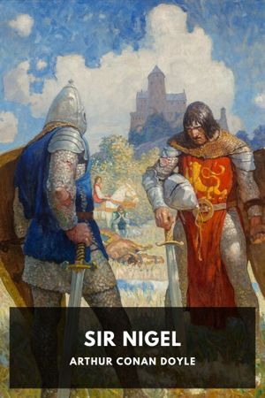
Sir NigelArthur Conan Doyle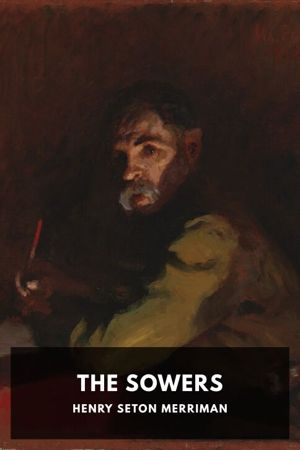
The SowersHenry Seton Merriman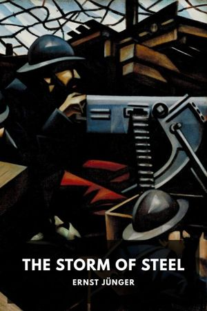
The Storm of SteelErnst JüngerFinished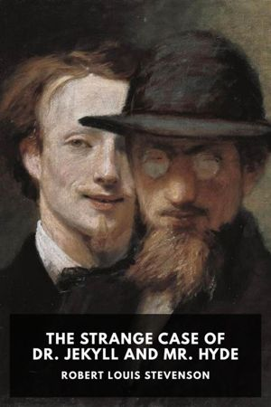
The Strange Case of Dr. Jekyll and Mr. HydeRobert Louis Stevenson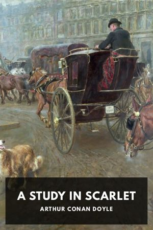
A Study in ScarletArthur Conan Doyle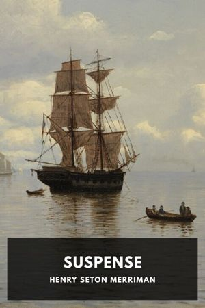
SuspenseHenry Seton Merriman76% read
T
- A Tale of Two CitiesCharles Dickens
- Tao Te ChingLaozi
- The Time MachineH. G. Wells
 To the LighthouseVirginia Woolf
To the LighthouseVirginia Woolf- Treasure IslandRobert Louis Stevenson
U
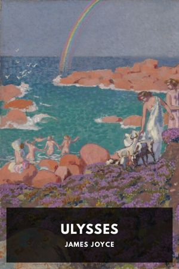
UlyssesJames Joyce
V
- The VulturesHenry Seton Merriman
W
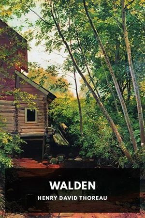
WaldenHenry David Thoreau War and PeaceLeo Tolstoy
War and PeaceLeo Tolstoy- The War of the WorldsH. G. Wells
- The Wealth of NationsAdam Smith
- The Wind in the WillowsKenneth Grahame
- With Edged ToolsHenry Seton Merriman
- The Wonderful Wizard of OzL. Frank Baum
 Wuthering HeightsEmily Brontë
Wuthering HeightsEmily Brontë
This week
- FrankensteinMary ShelleyFinished
- The Gold BagCarolyn WellsFinished
- Pride and PrejudiceJane AustenFinished
- The Storm of SteelErnst JüngerFinished
- DraculaBram StokerFinished
Earlier in November
- MeditationsMarcus Aurelius55% read
- Alice’s Adventures in WonderlandLewis Carroll
- Short FictionJoseph Conrad79% read
- Moral Letters to LuciliusSeneca
- The Count of Monte CristoAlexandre Dumas71% read
- SuspenseHenry Seton Merriman76% read
- Moby DickHerman Melville12% read
- Gothic7 books
- Detective fiction6 books
- Reading List6 books
- Poetry & drama6 books
- Stoics5 books
- Russian novels5 books
- No collection61 books
From Calibre’s Collection column. Ribbon never changes them.
- Classic novels41 books12 in Calibre · 29 suggested
- Gothic & horror11 books7 in Calibre · 4 suggested
- Detective fiction12 books6 in Calibre · 6 suggested
- Philosophy14 booksAll suggested
- Adventure13 booksAll suggested
- Science fiction6 booksAll suggested
- Russian literature7 booksAll suggested
- Children’s classics8 booksAll suggested
- Poetry5 booksAll suggested
- Drama4 booksAll suggested
- Short stories6 booksAll suggested
- History & politics5 booksAll suggested
Genres are suggested by AI and stay in Ribbon until you promote them to Calibre. Review suggestions 25 of 96 promoted
67 authors
The Evening Courier
Daily · 5 issues downloadedHarbour Weekly
Weekly · 4 issues downloadedThe Northern Review
Monthly · 3 issues downloadedScience Monthly
Monthly · 2 issues downloadedThe Garden Gazette
Weekly · 3 issues downloadedField & Shore
Monthly · 3 issues downloaded- Field & ShoreNovemberNew
- Field & ShoreOctober40% read
- Field & ShoreSeptemberFinished
The Literary Supplement
Weekly · 4 issues downloadedFetched by Calibre’s news downloads. Older issues are removed when Calibre removes them.